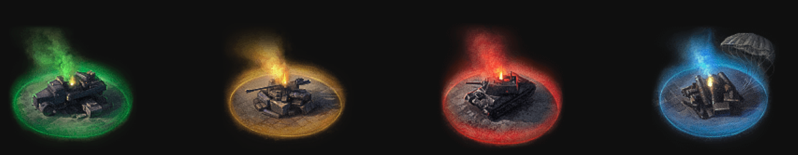
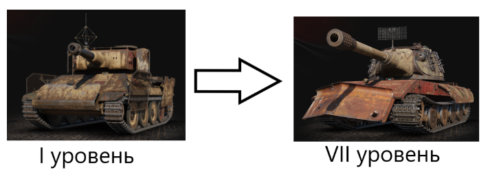
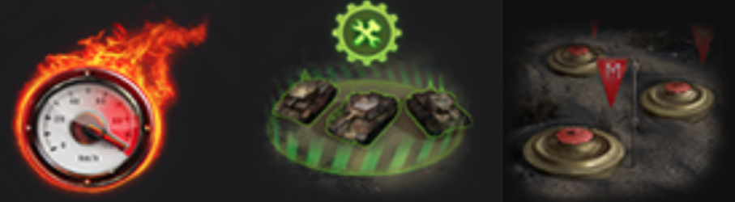

В "Стальной Охотник - настоящая королевская битва в Мире Танков! В одиночном режиме вы учавствуете в сражении из 15 танков - каждый сам за себя. Главная цель - остаться последним выжившим в бою.
Для сражений представлены три особые огромные карты, поиграть на которых в обычных боях нельзя: "Зона 404", "Арзагир 4.04" и "Фирнульфир" - самая новая и живописная (слева направо)
Будьте внимательны! В течение боя карта уменьшается - её секторы закрываются один за другим, уничтожая технику игроков, не успевших покинуть опасную зону. Красным цветом на карте обозначены уже закрытые области, жёлтым - те, что скоро закроются.
Вам предстоит сражаться на особой технике события. Всего 8 танков - по одному танку каждой развитой страны: Варяг (СССР), Walkure (Германия), Raven (США), Harbinger (Великобритания), Arlequin(Франция), Bai Lang(Китай), Huragan(Польша) и Beowulf(Швеция).
Главная особенность режима - возможность улучшение техники прямо в бою. Наносите урон противнику и ищите припасы, разбросанные по карте - они обозначены дымами разных цветов, выбирайте улучшение и прокачивайте танк прямо во время сражения!

Вот наглядный пример: немецкая Walkure до и после полной прокачки

Помимо опыта, нужного для улучшения в припасах можно найти ремкомплекты, заряды восстановления прочности и заряды навыков. Дело в том, что каждый танк королевской битвы может восстанавливаться, а также у каждого есть уникальные боевые умения. Некоторые из них: Ремонтная зона, Минное поле, ускорители.

Режим доступен постоянно, в течение всего года.
Теперь вы знаете многое о Стальном Охотнике и готовы вступить в сражение. Желаем побед!